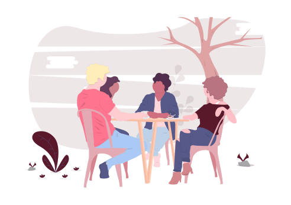

Community
CyTech's community is made up of motivated and accomplished members in the STEM and Cyber field that are working together to motivate students through our support system.

Education
With our self made and taliored curriculum for our students of any age, CyTech is reaching to touch everyone no matter how young or experienced they may be.
Opportunity
Each activity or presentation made for our students equip them with a new skill. When CyTech members go into our communtiy, we want to ensure that students can take away something from the experience.

Outreach
Given the opportunities that have lead us to be passionate about STEM and Cyber, CyTech hopes to pass that on to others, regardless of their walk of life.